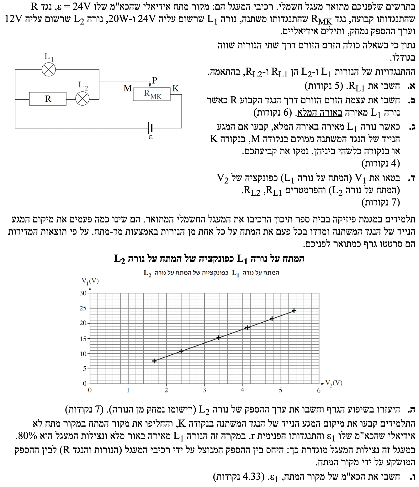

פתרון שאלה בפיזיקה - בגרות חשמל 2023, שאלה 3
פיזיקה 5 יח"ל
פתרון מודרך, צעד-אחר-צעד כולל ניתוח מעגלים

ניתוח המעגל החשמלי בטרם נתחיל לפתור:
כדי להצליח בשאלה, חשוב מאוד להבין את הטופולוגיה (מבנה) של המעגל. בואו נעקוב אחר מסלול הזרם היוצא מהסוללה:
- הזרם יוצא ממקור המתח ומתפצל לשני ענפים המחוברים במקביל.
- בענף העליון נמצאת נורה \( L_1 \).
- בענף התחתון נמצאים נגד \( R \) ונורה \( L_2 \) המחוברים ביניהם בטור.
- לאחר מכן, שני הענפים מתאחדים חזרה, והזרם הכולל עובר דרך החלק הפעיל של הנגד המשתנה (החלק שבין המגע הנייד \( P \) לקצה \( K \)).
תרשים סכמטי של מבנה המעגל השקול:

סעיף א'
הרחבה מושגית: הבנה לעומק של "ערכים נקובים"
הערכים הנקובים הרשומים על נורה או מכשיר (כמו 24V, 20W) מאפשרים לנו תמיד לחשב שני נתונים קריטיים: את ההתנגדות של המכשיר ואת הזרם המקסימלי המותר דרכו עפ"י היצרן (\( I_{max} = P_{n} / V_{n} \)).
חשוב להבין: ערכים נקובים (או מקסימליים) הם הערכים שעבורם היצרן נותן אחריות. מתחת לערכים אלו המנורה תעבוד בצורה תקינה. מה קורה מעל לערכים אלו? אין אחריות! חשוב לדעת כי מתח או זרם גבוהים מהנקוב לא בהכרח גורמים לנורה להישרף מיד. בעבר אף הייתה שאלת בגרות שבה נורה המשיכה לעבוד למרות שהזרימו דרכה זרם גבוה מהמקסימלי הרשום עליה!
המתח הנקוב: \( V_{1n} = 24\text{ V} \)
ההספק הנקוב: \( P_{1n} = 20\text{ W} \)
נאמר לנו בשאלה כי "התנגדויות של הנורות... קבועות". (הן מתנהגות כנגדים אוהמיים אידיאליים).
\( P = V_{AB}I \) \( V = RI \)
על ידי בידוד הזרם (\( I = \frac{V}{R} \)) והצבתו בנוסחת ההספק, נקבל את הקשר הישיר המוכר: \( P = \frac{V^2}{R} \)
הצבה ופתרון:
מסקנה: \( R_{L1} = 28.8 \, \Omega \)
סעיף ב'
בנוסף, ישנו נתון מפתח בתחילת השאלה (התקף לכל הסעיפים): "הזרם הזורם דרך שתי הנורות שווה בגודלו", כלומר \( I_1 = I_2 \).
1. חישוב זרם לפי הגדרת ההספק: \( P = VI \implies I = \frac{P}{V} \)
2. עקרון חיבור בטור: רכיבים המחוברים בטור (באותו ענף ללא צמתים ביניהם) חולקים בדיוק את אותו הזרם.
הצבה ופתרון:
ראשית, נמצא את הזרם הזורם בנורה \( L_1 \) כאשר היא פועלת בהספק מלא:
על סמך הנתון המקדים, הזרם דרך הנורה השנייה שווה לו:
כפי שראינו בניתוח המעגל בתחילת הפתרון, הנגד \( R \) והנורה \( L_2 \) מחוברים בטור באותו ענף. לכן, הזרם דרכם זהה:
מסקנה: עוצמת הזרם דרך הנגד הקבוע R היא \( I_R = 0.833 \, \text{A} \)
סעיף ג'
הכא"מ (המתח) של מקור המתח האידיאלי (ללא התנגדות פנימית) נתון כ- \( \varepsilon = 24\text{ V} \).
חוק המתחים של קירכהוף עבור לולאה סגורה: \( \Sigma \varepsilon = \Sigma IR \).
לחלופין, עקרון פשוט: המתח שמספק המקור מתחלק בין החלקים המחוברים בטור במעגל. המתח הכולל שווה לסכום מפל המתח על המערך המקבילי ומפל המתח על הנגד המשתנה (החלק הפעיל \( R_{PK} \)).
הצבה ופתרון:
נבחן את המתחים במעגל:
מכיוון שהנורה \( L_1 \) מחוברת במקביל לענף השני, המתח על כל המערך המקבילי שווה למתח על הנורה: \( V_{\text{parallel}} = V_1 = 24\text{ V} \).
נציב את הנתונים:
מפל המתח על החלק הפעיל של הנגד המשתנה הוא אפס. על פי חוק אוהם \( V_{PK} = I_{total} \cdot R_{PK} \). מכיוון שיש זרם במעגל (\( I_{total} > 0 \)), מתחייב שההתנגדות הפעילה של הנגד המשתנה תהיה אפס: \( R_{PK} = 0 \, \Omega \).
כדי שההתנגדות בין המגע הנייד \( P \) לקצה \( K \) תהיה אפס, המגע הנייד חייב להיות ממוקם בדיוק בקצה \( K \).
מסקנה: המגע הנייד נמצא בנקודה K.
סעיף ד'
חוק אוהם: \( V = RI \) שממנו נחלץ את ביטוי הזרם: \( I = \frac{V}{R} \).
הצבה ופתרון:
נבטא את הזרם דרך כל נורה באמצעות המתח שעליה וההתנגדות שלה:
נציב ביטויים אלו לתוך השוויון הנתון (\( I_1 = I_2 \)):
נבודד את המשתנה התלוי המבוקש (\( V_1 \)) על ידי הכפלת שני אגפי המשוואה ב-\( R_{L1} \):
מסקנה: \( V_1 = \frac{R_{L1}}{R_{L2}} \cdot V_2 \)
סעיף ה'
חישבנו בסעיף א' את התנגדות הנורה הראשונה: \( R_{L1} = 28.8 \, \Omega \).
ידוע מהשאלה כי המתח הנקוב של נורה \( L_2 \) הוא \( V_{2n} = 12\text{ V} \).
1. שיפוע של קו ישר מחושב על ידי בחירת שתי נקודות מדויקות על הגרף: \( m = \frac{\Delta y}{\Delta x} = \frac{y_2 - y_1}{x_2 - x_1} \).
2. הקשר התיאורטי שמצאנו בסעיף ד': השיפוע שווה ל- \( \frac{R_{L1}}{R_{L2}} \).
3. מציאת ההספק הנקוב באמצעות המתח וההתנגדות: \( P = \frac{V^2}{R} \).
הצבה ופתרון:
ראשית, נמצא את שיפוע הגרף הניסויי. לשם כך, עלינו למצוא נקודות חיתוך מדויקות של קו המגמה עם הרשת של הגרף.
ננתח את קנה המידה: בציר האופקי (\( V_2 \)) כל משבצת קטנה מייצגת \( \frac{1}{5} = 0.2\text{V} \). בציר האנכי (\( V_1 \)) כל משבצת קטנה מייצגת \( \frac{5}{5} = 1\text{V} \).
נקודה ראשונה שניקח היא ראשית הצירים \( (0,0) \) שכן הוכחנו תיאורטית שאין איבר חופשי לקו הישר.
נקודה שנייה ברורה מאוד על הגרף ממוקמת ב-2 משבצות קטנות אחרי הספרה 3 בציר X (כלומר \( 3.4\text{V} \)), וגובהה נופל בדיוק על הקו של \( 15\text{V} \) בציר Y. הנקודה היא \( (3.4, 15) \).
נשווה את השיפוע הניסויי לשיפוע התיאורטי כדי לחלץ את \( R_{L2} \):
כעת, לאחר שיש בידינו את התנגדות הנורה השנייה ואת המתח הנקוב שלה (\( 12\text{V} \)), נחשב את ההספק הנקוב שלה:
נעגל את התשובה ל-3 ספרות מהותיות כנדרש בפיזיקה.
מסקנה: ערך ההספק של נורה L2 הוא \( P_{2n} = 22.1 \, \text{W} \)
סעיף ו'
הסוללה האידיאלית הוחלפה בסוללה מעשית בעלת כא"מ \( \varepsilon_1 \) והתנגדות פנימית \( r \).
נאמר כי גם במקרה זה, הנורה \( L_1 \) מאירה באורה המלא, מה שאומר שמתח ההדקים על המעגל החיצוני (שהוא כעת רק המערך המקבילי) חייב להיות \( 24\text{V} \). כלומר: \( V_{ab} = 24\text{V} \).
נצילות המעגל מוגדרת כהספק המנוצל חלקי ההספק המושקע, ונתון שהיא \( 80\% \), כלומר \( \eta = 0.8 \).
נשתמש בהגדרת הנצילות מהנוסחאון: \( \eta = \frac{P_{\text{eff}}}{P_{\text{in}}} \).
הספק מנוצל במעגל (על ידי הרכיבים החיצוניים) שווה לזרם הכולל כפול מתח ההדקים: \( P_{\text{eff}} = I_{total} \cdot V_{ab} \).
הספק מושקע על ידי המקור שווה לזרם הכולל כפול הכא"מ: \( P_{\text{in}} = I_{total} \cdot \varepsilon_1 \).
נציב ביטויים אלו ונקבל את הקשר האלגנטי: \( \eta = \frac{V_{ab}}{\varepsilon_1} \).
הצבה ופתרון:
מכיוון שהנורה \( L_1 \) מאירה באורה המלא, המתח על הענף המקבילי הוא \( 24\text{V} \). מכיוון שהנגד המשתנה הוצא למעשה מהמעגל (התנגדותו 0), המתח הזה הוא בדיוק מתח ההדקים. לכן, \( V_{ab} = 24\text{V} \).
נציב את הנתונים בנוסחת הנצילות שהרגע פיתחנו:
נכפיל ב-\( \varepsilon_1 \) ונחלק ב-\( 0.8 \):
מסקנה: הכא"מ של מקור המתח הוא \( \varepsilon_1 = 30.0 \, \text{V} \)